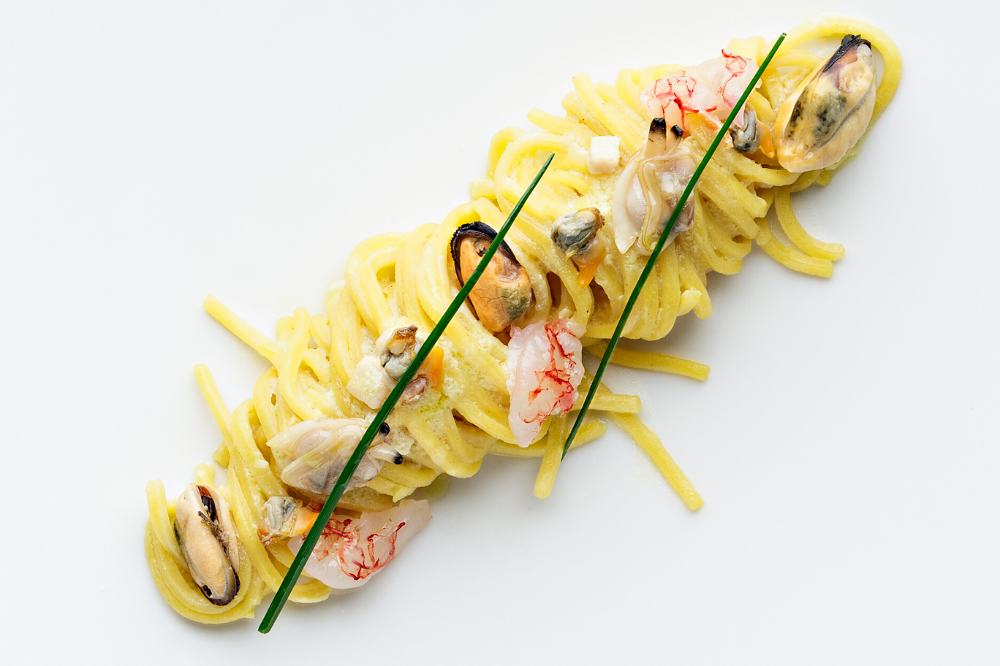

Back

Recipe by Chef Luigi Pomata, of the Luigi Pomata Restaurant in Cagliari.
Carbonara is an Italian pasta dish from Rome made with eggs, hard cheese, cured pork, and black pepper.
The dish arrived at its modern form, with its current name, in the middle of the 20th century.
The cheese is usually Pecorino Romano, Parmigiano-Reggiano, or a combination of the two.
Ingredients
100 g of Nieddittas
40 g smoked tuna
40 g smoked swordfish
320 g spaghetti
1 bunch of parsley
4 tails of red prawns
Olive oil, salt and pepper to taste
2 whole eggs
A knob of butter
½ lt vegetable stock
Steps
Clean the mussels, then wash and dry them. Put the mussels in a pan with olive oil and parsley. Close the lid and cook for 5/7 minutes. When the mussels begin to open, turn off the heat and, leaving them covered, wait for them tocool.
Strain the cooking liquid and take the mussels from their shells. Mix the cooking liquid with eggs and let them pasteurize in a water bath up to the temperature of 72° C, stirring constantly.
In a frying pan with a knob of butter, brown the tuna and smoked swordfish, cut into strips, add a ladle of stock and turn off the heat.
Cook the pasta al dente, drain and finish cooking in a pan with the stock. At the end, add the prawns and Nieddittas mussels. Turn off the heat and add the mixture of pasteurized eggs, mix well and, if necessary, add salt and pepper.